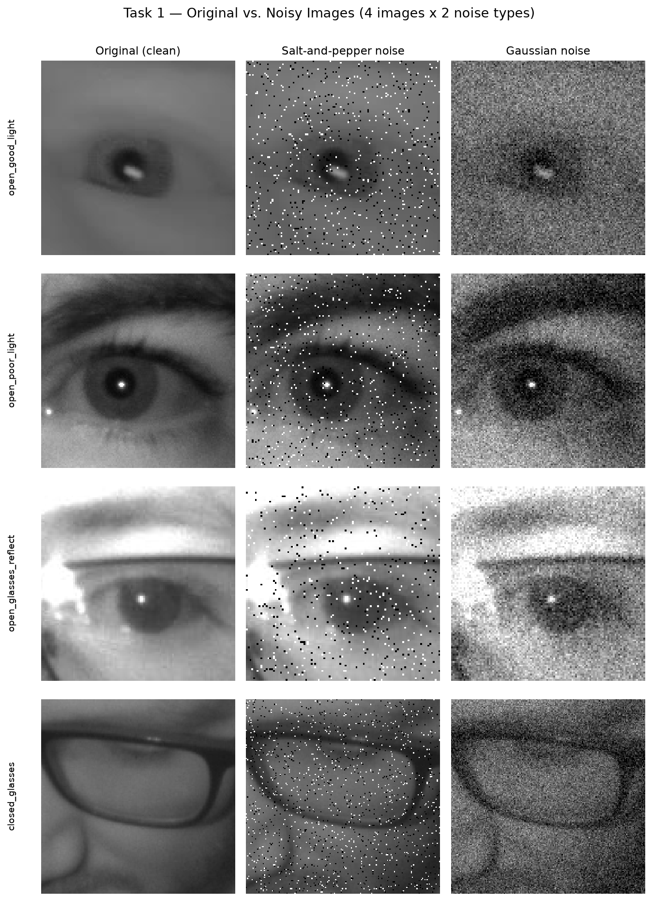
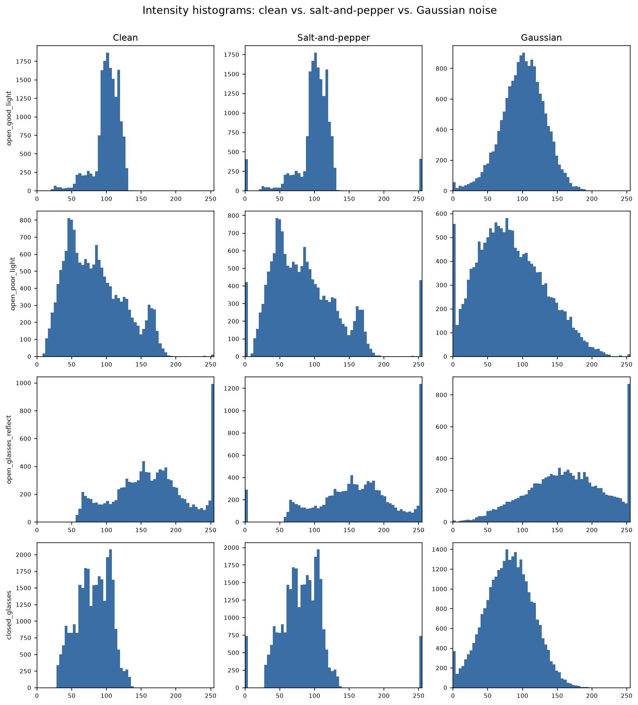
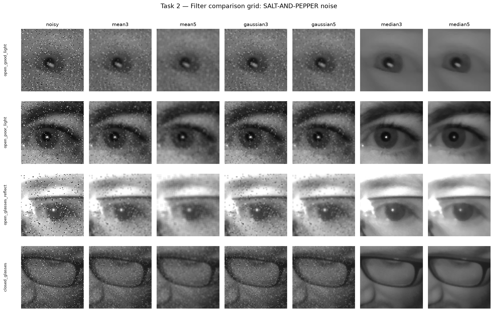
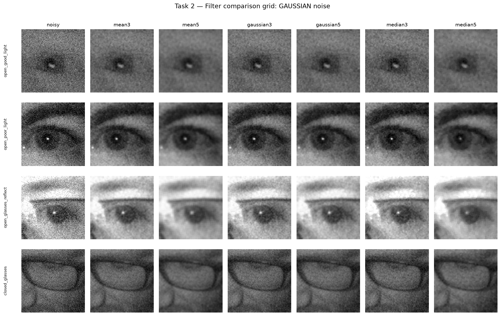
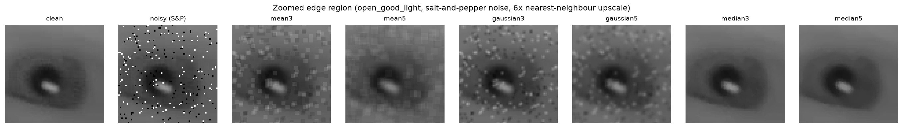
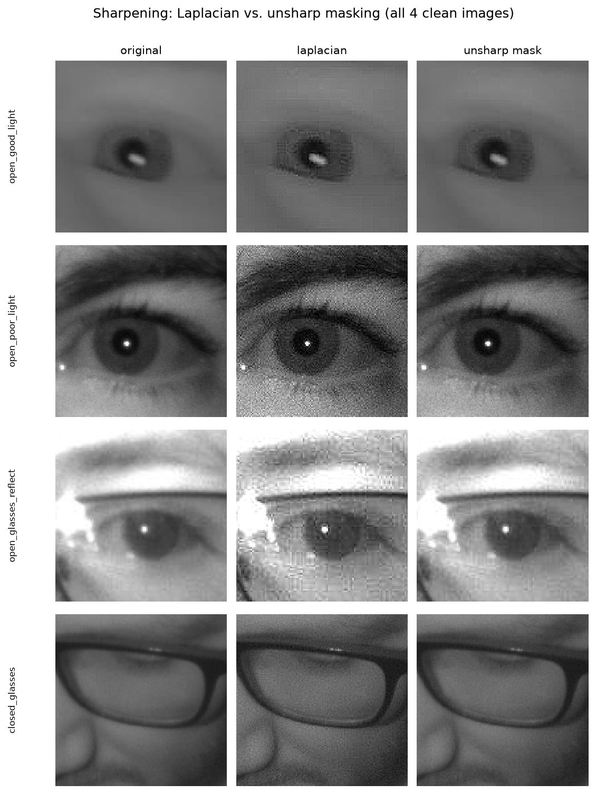
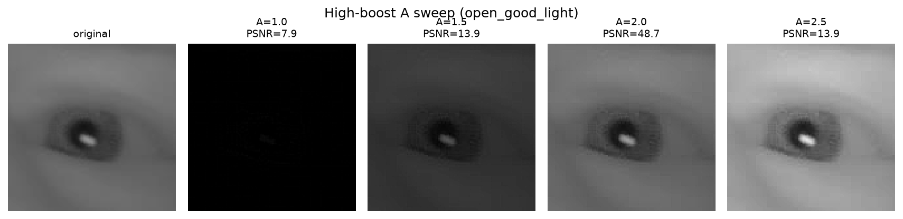
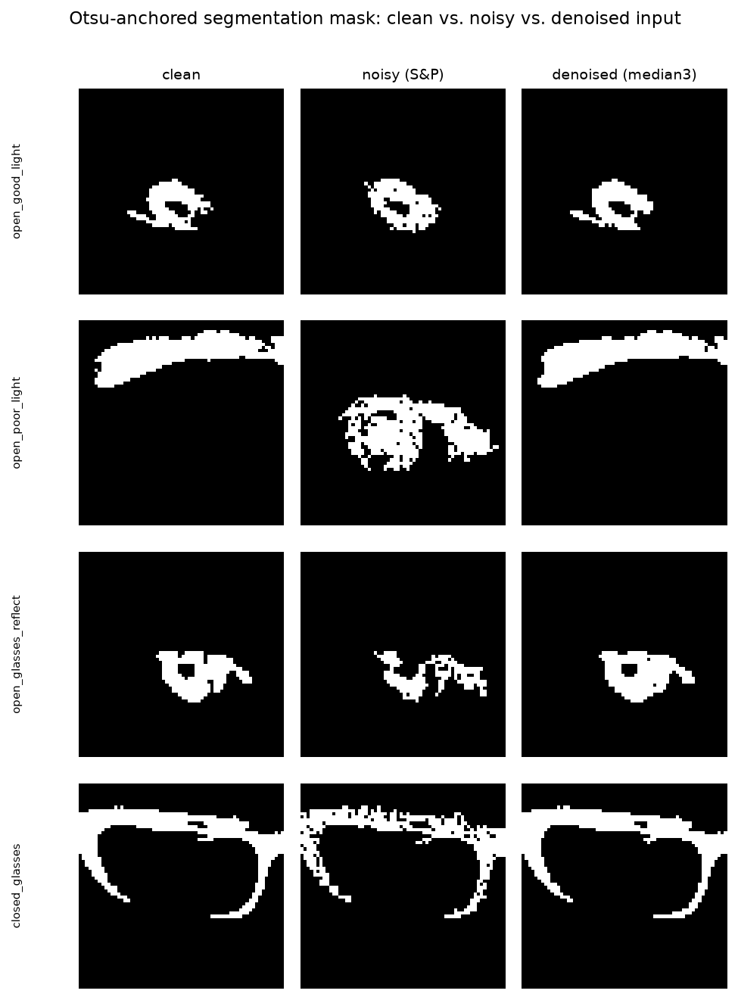

Digital Image Processing Mini Project: Driver Drowsiness Detection
| Name | Roll Number |
|---|---|
| Amey Pawar | 23108B0057 |
| Sejal Andhale | 23108B0049 |
notebooks/09_spatial_filtering.ipynb, executed top-to-bottom with stored outputs.
This report is the condensed submission write-up. All filter/noise/metric code lives in
src/spatial_filtering.py; segmentation reuses src.segment /
src.preprocess (earlier weeks) unmodified.
Extend the pipeline with a spatial-domain filtering module: apply smoothing and sharpening filters to improve image quality, reduce noise, and enhance detail, so this module's output becomes an improved input for the segmentation module developed in earlier weeks. The syllabus names smoothing filters, sharpening filters, and high-boost filtering; the practical component asks for analysis of noise reduction, edge preservation, and image quality.
Four images from data/samples/ (40-image curated MRL Eye Dataset subset), chosen
to span genuinely different acquisition conditions rather than one favourable case, preferring
the physically larger crops so filter effects are visible pixel-for-pixel.
| Name | File | Condition | Size |
|---|---|---|---|
| open_good_light | alert/s0031_00366_1_0_1_0_1_02.png | open, no glasses, good lighting | 128x128 |
| open_poor_light | alert/s0014_08297_0_0_1_1_0_02.png | open, no glasses, poor lighting | 130x130 |
| open_glasses_reflect | alert/s0032_02096_0_1_1_2_1_02.png | open, eyeglasses + high IR reflection | 108x108 |
| closed_glasses | drowsy/s0018_02225_0_1_0_0_0_01.png | closed eye, glasses, poor lighting | 172x172 (largest closed-eye crop available) |
These are grayscale near-infrared eye crops, modest in size (55-297px across the full curated sample, median 87px). Even this "largest crops" subset tops out at 172px, so a 5x5 filter kernel covers a proportionally much larger fraction of the frame than on a full-resolution photo — directly relevant to the blurring results in Task 2.
Noise injection (src.spatial_filtering.add_salt_pepper_noise,
add_gaussian_noise), both seeded seed=0: salt-and-pepper at
amount=0.05 (5% of pixels, 50/50 salt/pepper split); Gaussian at
mean=0, sigma=25 (0-255 units), clipped to [0,255]. One noise level per type was
used, chosen so degradation is clearly visible without destroying eye structure (both
baselines land around 18-20dB PSNR — see table below).
Smoothing filters (mean_filter, gaussian_filter,
median_filter — thin wrappers over cv2.blur /
cv2.GaussianBlur / cv2.medianBlur), each at kernel sizes
3x3 and 5x5.
Metrics, all against the clean, noise-free original: PSNR
(skimage.metrics.peak_signal_noise_ratio, data_range=255);
SSIM (structural_similarity, data_range=255); an
edge-preservation index — Pearson correlation between Sobel gradient-magnitude maps of
the filtered image and the clean original (1.0 = edge structure perfectly correlated with the
original's); and timing via time_filter, which runs each filter call 2000
times inside one time.perf_counter() bracket and reports microseconds/call — a
single time.time() around one ~130px filter call would measure scheduler noise,
not real cost.
Coverage: 4 images x 2 noise types x 3 filters x 2 kernel sizes = 48 filtered results, each scored on all three metrics, plus per-combination timing.


| Image | Noise | PSNR (dB) | SSIM | Edge-pres. |
|---|---|---|---|---|
| open_good_light | salt & pepper | 18.79 | 0.187 | 0.115 |
| open_good_light | gaussian | 20.23 | 0.125 | 0.127 |
| open_poor_light | salt & pepper | 18.17 | 0.321 | 0.241 |
| open_poor_light | gaussian | 20.39 | 0.261 | 0.361 |
| open_glasses_reflect | salt & pepper | 17.97 | 0.381 | 0.365 |
| open_glasses_reflect | gaussian | 20.51 | 0.379 | 0.520 |
| closed_glasses | salt & pepper | 18.33 | 0.240 | 0.116 |
| closed_glasses | gaussian | 20.27 | 0.170 | 0.112 |



| Noise | Filter | Kernel | PSNR (dB) | SSIM | Edge-pres. | Time (µs/call) |
|---|---|---|---|---|---|---|
| salt & pepper | mean | 3x3 | 27.30 | 0.597 | 0.449 | 4.08 |
| salt & pepper | mean | 5x5 | 30.24 | 0.767 | 0.602 | 4.35 |
| salt & pepper | gaussian | 3x3 | 26.47 | 0.563 | 0.378 | 6.32 |
| salt & pepper | gaussian | 5x5 | 28.73 | 0.679 | 0.503 | 6.99 |
| salt & pepper | median | 3x3 | 43.18 | 0.972 | 0.972 | 4.62 |
| salt & pepper | median | 5x5 | 39.53 | 0.955 | 0.917 | 25.61 |
| gaussian | mean | 5x5 | 31.87 | 0.818 | 0.678 | 4.32 |
| gaussian | mean | 3x3 | 29.22 | 0.658 | 0.565 | 4.08 |
| gaussian | gaussian | 3x3 | 28.47 | 0.616 | 0.503 | 6.24 |
| gaussian | gaussian | 5x5 | 30.60 | 0.738 | 0.617 | 6.95 |
| gaussian | median | 3x3 | 27.57 | 0.570 | 0.475 | 4.69 |
| gaussian | median | 5x5 | 30.51 | 0.755 | 0.553 | 25.92 |
Which filter wins for which noise (highlighted rows above):
cv2.medianBlur needs a partial sort per window, scaling faster
with window size than the linear filters' running-sum approach. All filters remain
sub-millisecond at these crop sizes, but the relative scaling matters at video frame rates on
larger frames.The numbered tasks stop at smoothing, but the assignment Objective explicitly names sharpening and high-boost filtering as syllabus scope — covered concisely here.
Laplacian sharpening (src.spatial_filtering.laplacian_sharpen, fixed kernel
[[0,-1,0],[-1,5,-1],[0,-1,0]]) and unsharp masking (unsharp_mask:
blur → subtract → add back, amount=1), both applied to the clean images —
sharpening is a detail-enhancement operation, evaluated on clean input.

| Image | Method | PSNR (dB) | SSIM | Edge-pres. |
|---|---|---|---|---|
| open_good_light | laplacian | 38.53 | 0.944 | 0.943 |
| open_good_light | unsharp_mask | 48.67 | 0.995 | 0.990 |
| open_poor_light | laplacian | 25.42 | 0.638 | 0.792 |
| open_poor_light | unsharp_mask | 38.46 | 0.959 | 0.974 |
| open_glasses_reflect | laplacian | 28.30 | 0.827 | 0.904 |
| open_glasses_reflect | unsharp_mask | 38.18 | 0.977 | 0.984 |
| closed_glasses | laplacian | 34.91 | 0.864 | 0.857 |
| closed_glasses | unsharp_mask | 45.52 | 0.986 | 0.976 |
Unsharp masking stays much closer to the original (PSNR 38-49dB, SSIM 0.96-0.99) than the fixed Laplacian kernel (PSNR 25-39dB, SSIM 0.64-0.94): it is tunable (blur radius, gain), while the single-pass Laplacian kernel applies one fixed, fairly aggressive boost every time. Both visibly crisp the pupil/iris boundary; a lower fidelity score than a smoothing filter's is expected, not a defect — sharpening intentionally departs from the original to increase perceived detail.
high_boost(img, A) implements output = A*original - blurred,
equivalently (A-1)*original + mask where mask = original - blurred is
the same high-frequency term unsharp_mask uses. Swept over
A = 1.0, 1.5, 2.0, 2.5 on open_good_light.

| A | PSNR (dB) | SSIM | Edge-pres. |
|---|---|---|---|
| 1.0 | 7.90 | 0.004 | 0.668 |
| 1.5 | 13.87 | 0.777 | 0.967 |
| 2.0 | 48.67 | 0.995 | 0.990 |
| 2.5 | 13.94 | 0.897 | 0.994 |
Worked out precisely, not assumed: matching A*original - blurred against
unsharp masking's original + mask = 2*original - blurred term-by-term requires
A=2, not A=1 — confirmed in the notebook by a direct pixel-equality check
(high_boost(A=2) == unsharp_mask(amount=1) → True). At A=1 the
(A-1)*original term vanishes entirely, leaving output = mask: a pure
high-pass edge signal with no low-frequency original surviving — the table shows this
precisely (PSNR collapses to 7.9dB, SSIM to 0.004: a near-black frame with edge lines, not a
recognizable sharpened eye), even though edge-preservation stays fairly high (0.668) because
the edges are correctly located, just with no surrounding brightness context. For a
practically useful sharpened image, A should be at or above 2 on this formula —
the common shorthand "A=1 is a mild sharpen" does not hold here, and this report says so rather
than smoothing over the discrepancy.
The assignment's stated objective: "the output of this module should become an improved
input for the segmentation module." For each image: run src.segment.segment_eye
(Otsu-anchored pupil isolation, unmodified from Week 3) on (a) the clean image, (b) the
salt-and-pepper noisy image (most disruptive to a dark-foreground threshold, since
impulse spikes are themselves picked up as spurious dark "pupil" components), and (c) the noisy
image denoised with median 3x3 (Task 2's clear winner on this noise type) — all three
passed through src.preprocess.preprocess_pipeline first, matching the real
pipeline order. Agreement with the clean-image mask is measured via IoU and Dice.

| Image | # components (clean/noisy/denoised) | IoU noisy vs. clean | IoU denoised vs. clean |
|---|---|---|---|
| open_good_light | 3 / 196 / 2 | 0.618 | 0.905 |
| open_poor_light | 5 / 27 / 3 | 0.000 | 0.974 |
| open_glasses_reflect | 4 / 69 / 5 | 0.531 | 0.949 |
| closed_glasses | 3 / 41 / 4 | 0.769 | 0.981 |
Salt-and-pepper noise fragments the raw Otsu mask badly — component counts jump from single
digits (clean) into the dozens/hundreds (noisy), since each surviving impulse speck below the
pupil-anchored threshold becomes its own connected component — and mask agreement collapses
(IoU as low as 0.000 on open_poor_light: a real, honestly-reported failure —
the noisy-image Otsu threshold locked onto a different spurious region entirely, not merely a
noisier true pupil). Denoising with median 3x3 before segmentation recovers component counts
to clean-image range and lifts IoU to 0.90-0.98 on all 4 images, directly confirming the
assignment's objective.
Scope note: this section covers only salt-and-pepper noise + median 3x3 (Task 2's clearest win), not every filter/noise combination — a deliberate cut to keep this section concise, not an oversight.
A=1 does not reduce to a mild sharpen under the
A*original - blurred formula — it collapses to a near-black pure-edge image; the
pixel-identical match to standard unsharp masking is at A=2, verified directly.results/task4_metrics_full.csv shows real image-to-image variation.